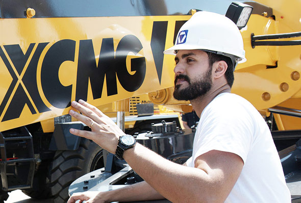

| 交通运输部党组书记、部长杨传堂异性调研徐工集团 | |
| 徐工集团财务有限公司再次荣获行业最高评级A级 |
-
双臂塔应势而生 填补徐工“特高压”输电工程领域产业空白——XGT2T120双平臂抱杆广泛应用
2016-06-22
为适应市场形势，满足客户需求，围绕国家电网“三纵三横一环网特高压输电工程”重大项目的建设，国家重大工程、重点领域与战略性新兴产业的需求。徐工塔机不负“...
-
探寻G一代足迹，桃源仙境闪耀徐工金
2016-06-22
一个多月以来，从徐州出发，“G一代探寻之旅”带您游遍大半个中国，从长白山脚下的东北老工业基地建设，到黄河中下游平原的经济崛起，再到九省通衢武汉的百人客...
-
带您畅享一部正在上演的科技大片 （G一代探寻之旅第二季）
2016-06-22
1558年伊丽莎白一世继承王位的时候，从英吉利海峡的另一边，不断地传来西班牙和葡萄牙航海探险家成功发财的消息。这些消息，是一个即将全面来临的时代，对懵懂的...
-
探寻G一代足迹，北京八达岭长城唯美展现
2016-06-24
近日到北京八达岭长城的游客，在欣赏宏伟的长城和美景之余，还能看到另一幅画面：巨大帅气的吊车挥舞着长长的吊臂在林间吊装，宛如智者在林间握着长竿垂钓，机械...
-
实力派新秀，初升的力量！——徐工G一代XCT55L5
2016-06-24
时间回到2个月前，4月18日，中国·徐州，一场起重机行业的科技盛宴进行的如火如荼。徐工G一代起重机产品的隆重推出，再一次颠覆了业界对中国起重机的认知。 “...
-
【工程主力】致敬徐工QAY800和它导演的风电作品
2016-06-24
作为中国千吨级起重机的鼻祖，徐工有着辉煌的战绩！自徐工千吨级起重机2012年投入实际施工应用以来，先后共有20余台千吨级转战福建、广州、云南、内蒙、山西等地...
-
徐工施维英再签成套环保及再生机械千万元订单
2016-06-23
近日，徐工施维英新产业销售部门传来喜讯，徐工混凝土机械上游新产业——环保及再生机械，以其破碎筛分建筑垃圾和矿山等资源的绿色环保、可再生利用的特点，推出...
-
徐工上海施维英3年厚积蓄势扭亏为盈，实现近20倍增长
2016-06-23
来到北京丰台区槐房再生水厂项目施工现场，登上巡视操作高台，想象中的臭气熏天和巨大的处理池并没有出现在眼前，“因为是全封闭式地下处理方式，处理池其实就在...
-
谁说情怀必须要有历史的冲刷？懂你只需一瞬间！ ——记徐工G一代XCT100施工初印象
2016-06-23
很多改变换做十年之前是难以想象的，可如今却成为了看得见的现实。本世纪的“牛顿&伽利略”时代就在科技大神的脑洞里相继出现。曾经他们提出的真理让人们对上帝...

-
让梦想在草原上自由飞翔——记徐工挖机内蒙古客户郭永强哈啊啊啊啊啊啊啊啊
“敕勒川，阴山下，天似穹庐，笼盖四野。天苍苍，野茫茫，风吹草低见牛羊”，一首豪放的民歌唱出了内蒙古大...
-
邢万波：我有支徐工挖机“铁甲战队”
来自黑龙江偏远农村，外表粗犷黝黑，性格开朗豁达，典型的东北纯爷们形象，这就是邢万波。作为一个农村出来...
让梦想在草原上自由飞翔——记徐工挖机内蒙古....
“敕勒川，阴山下，天似穹庐，笼盖四野。天苍苍，野茫茫，风吹草低见牛羊”，一首豪放的民歌唱出了内蒙古大.
邢万波：我有支徐工挖机“铁甲战队”
来自黑龙江偏远农村，外表粗犷黝黑，性格开朗豁达，典型的东北纯爷们形象，这就是邢万波。作为一个农村出来...